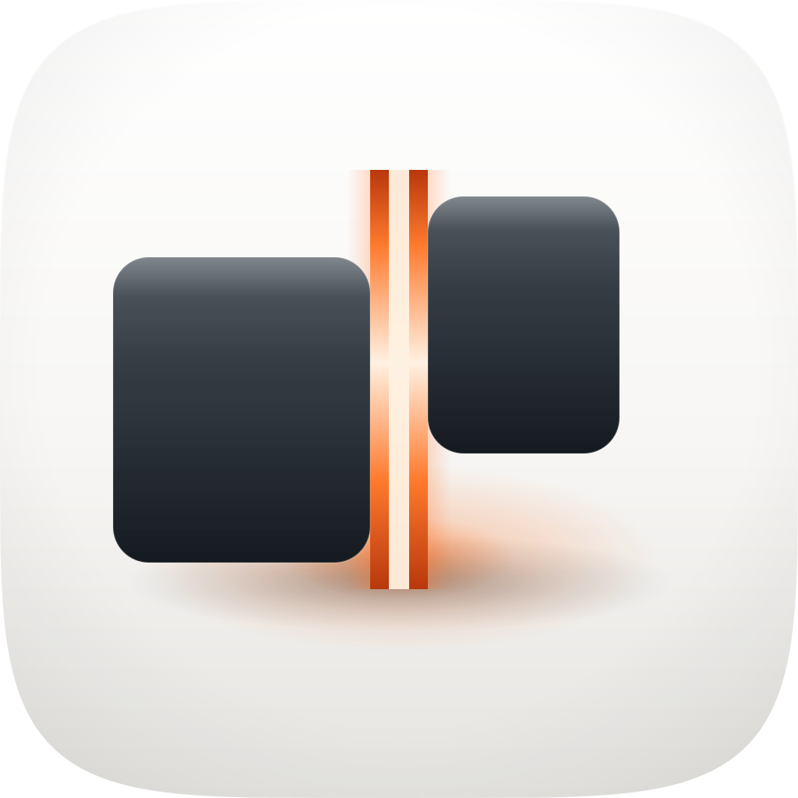
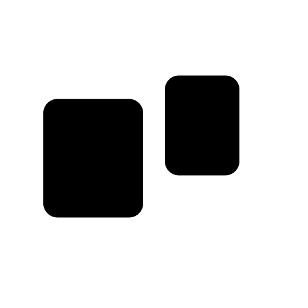
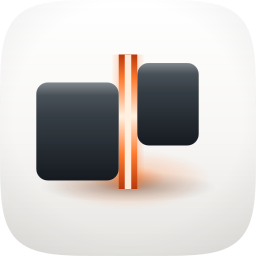
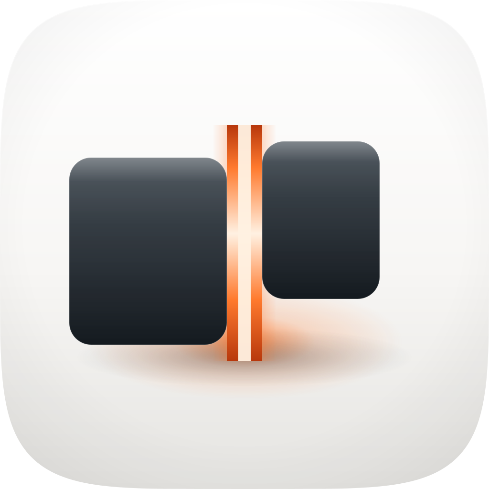
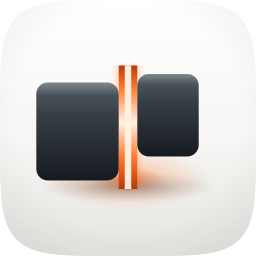
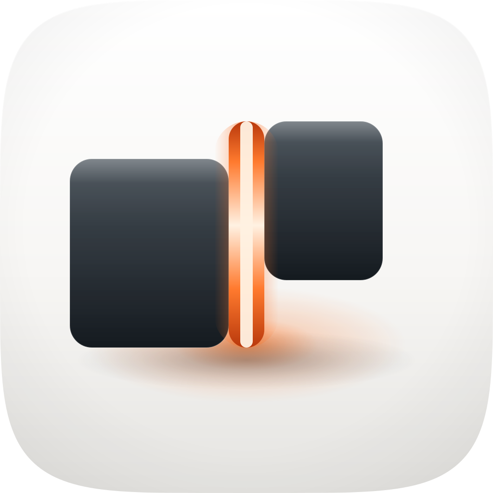
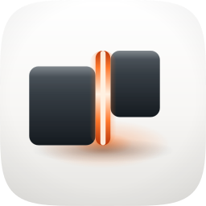

This sheet was written on 19 August 2026, not at commission time. The commission shipped
icon.svg, its eight PNG exports and build_icon.py with no audit sheet at all, so there is no
original verdict to reproduce and none is claimed here. What follows is honest about which parts are recovered and
which are new. Recovered: the direction, the runner-up direction and the reason it lost, the family
argument against braindump, the corpus samples behind the palette, and two rejected states of the master
— all of them written down in build_icon.py's own docstring and comments, quoted below where they are
used. New on this date: the two losing takes' renders, which were reconstructed by rebinding the single
constant each comment names in the master's own svg() function (the script refuses to write unless a control
run with the shipped parameters reproduces icon.svg byte for byte, and it does), and every rubric score and
verdict on this page, which were scored retrospectively against the 12-point rubric from the renders shown here. No
fidelity loop, no blind judge panel and no image-model engine ran on this commission; the sheet says so rather than
implying a set was judged. Only Engine A ran, and the three takes are three states of it.

icon.svg. Two graphite gel slabs, the right one held 78px
above the left, with a vermilion seam running between them and past both ends. The focal element is the gap: the light
is in the space where an object is not, which is the one thing this skill is pointing at.
python3 silhouette.py. Two stepped slabs with a clean channel between them
— nameable, and not any category glyph. The honest caveat is that this is a modest outline: in the full render
the identity is carried as much by the seam's light as by the silhouette.| Take | Hero at 1024, then renders at 128 / 64 / 48 / 32 / 16 css px (2× retina sources), plus the 16px squint magnified | Rubric | Verdict |
|---|---|---|---|
| A · icon.svgEngine A — hand-authored layered SVG from build_icon.py — SHIPS |  |
10 / 12 | Clears all four non-negotiables on these renders. #1: the squircle is a
clipPath over the whole group, taken from squircle-path.txt — no baked corner radius
and no baked drop shadow, and every render's corners are transparent. #3: see the silhouette above.
#4: at 16px it holds two dark blocks split by a bright line that visibly overruns the top of the
right one, with no smear. #7 is the strongest number on the tile — the graphite mass measures
11.3:1 against the porcelain ground (mean relative luminance 0.040 against 0.968), so figure-ground
survives grayscale outright. #5 one soft top light plus the sanctioned emissive interior, no hard
speculars anywhere; #8 the seam is drawn behind the masses and clipped by them, and the bloom and
contact shadow both centre under the gap, so the plane order agrees with where the light is.
Two points off. #2: the focal is 63.5% of tile width, inside the 55–65% band, but its measured
ink bbox centres at x 469 with margins of 145 left and 229 right — the seam is centred on the tile and the
mass is not, which is the direct cost of deliberately unequal slabs. #10: the identity is not
hostage to a hue, but the argument is hostage to a light ground — the docstring's own reason for
rejecting the dark register is that a bright gap "needs a light ground to read as empty rather than as
another glowing thing on black", and that is exactly what Dark and Tinted do to it. Untested against real variant
renders; a reasoned prediction, not a measurement, and the first thing a revision should measure. |
| A− · icon-take-lift34.svgEngine A, the rejected 34px lift — reconstructed 19 Aug 2026 |   |
9 / 12 | One constant apart from the master: RIGHT_LIFT at 34 rather than 78. The comment beside
that constant is the whole verdict — "At 34 it read as a misalignment; it has to be unmistakably deliberate or
it looks like a bug rather than a pause." The renders bear it out. #11 fails: the held beat is this
icon's one nameable device, and at 34px of lift (3.3% of the tile) the pair reads as two blocks that failed to line
up, so the device is not present — a bug, not a pause. It also costs the silhouette: at 34 the two slabs sit
near enough to level that the filled outline is a single interrupted bar, where the master's step is what makes the
pair asymmetric and therefore nameable, so #3 is marginal here rather than clean. Worst at 16px,
where 34px of lift is half a pixel and the step vanishes entirely. Carries the master's own #2
offset and #10 liability unchanged, because the x geometry and the palette are identical.
Rejected. What it bought the master is the number 78. |
| A‽ · icon-take-capsule.svgEngine A, the rejected capped seam — reconstructed 19 Aug 2026 |   |
7 / 12 | The seam drawn on top of the masses, with rounded caps, bounded by its own rectangle instead of overrun and clipped by the blocks. Again the comment is the verdict — "Drawn on top with rounded caps it became a glowing capsule sitting between two blocks, which is an object, and the whole point is that the focal element is empty." #3 fails outright, which is a non-negotiable: filled black, the capsule is ink and it bridges the two masses, so the channel that IS the subject disappears and the silhouette collapses into one connected blob with a notch. #8 goes with it: a lit object lying across the front faces of both slabs puts the light in front of the masses rather than between them, so the plane order now contradicts the light model the bloom and contact shadow still describe. #11 is lost for the reason the comment gives: the signature move was that the focal element is empty, and an object in the gap is an ordinary glyph-plus-accent. Carries the master's #2 and #10 deductions too. Rejected on a non-negotiable. What it bought the master is the 34px overrun at each end, which is what makes the blocks rather than a rectangle decide where the light stops. |
icon.png / icon-1024.png /
icon-512.png / icon-256.png / icon-128.png / icon-96.png /
icon-64.png / icon-32.png / icon-16.png. It scores 10 / 12 and is
the only take that clears all four non-negotiable checks on real renders: the two rejected states each fail a check the
other passes, and the capsule fails #3. It is the only one of the three whose gap survives the silhouette test, which for
this subject is the whole icon. Provenance is unusually clean for a retrospective sheet: re-rendering icon.svg
reproduces all six of the shipped exports the audit sizes cover — 1024, 256, 128, 96, 64 and 32 — byte for
byte, so the sheet is auditing the delivered artifact and not a look-alike.
#bg, #mid, #fg and
#highlight appear in icon.svg as HTML comments, and the only named groups in the file are
mass-left and mass-right. It renders identically and it carries identity in shape and value, so
#10 is not lost on this alone, but nothing downstream can address those planes and an Icon Composer import would have to
rebuild them by hand.
(4) One engine, not three. The commission floor is three engines — hand-authored SVG, Arrow vector,
corpus-referenced raster — and only Engine A ran. Stated as a deviation rather than presented as a full commission:
the three takes above are three states of one engine, two of them reconstructed on 19 Aug 2026 from the parameters the
build script records, and no take on this sheet was ever judged by a panel or a fidelity loop.
(5) At 16px the step reduces to about a pixel. It survives, and the master is visibly better than the 34px
take there, but the "held mid-step" reading is a large-size reward and the small-size mark is "two blocks, one bright
line".audit-renders/render-manifest.json records all three takes and the whole sheet is machine-checkable —
master from icon.svg, lift34 from icon-take-lift34.svg and
capsule from icon-take-capsule.svg, all three as svg, since the master carries
its own clipPath and needs no external mask. Rendered with
python3 ../../create-mac-icon/skills/create-mac-icon/scripts/audit_sheet.py render . at 1024 / 256 / 128 / 96
/ 64 / 32 sources, displayed at half; verified with its check subcommand. One naming note for anyone
regenerating: this commission exports the full-size raster as icon-1024.png as well as icon.png,
and the two are byte-identical, so the marketplace family and the size ladder are both satisfied by the same file.
Figure-ground and bbox numbers were measured on the 1024 renders on this page: relative luminance per WCAG, the mass
sampled over the left slab's interior and the ground over an empty quadrant, and the ink bbox taken as the pixels that are
either dark or chromatic inside the mask.